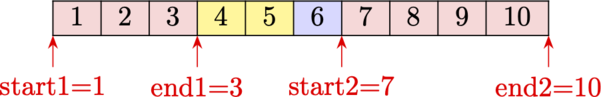
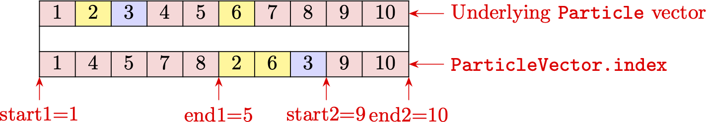

Overview of basic building blocks
Particle indexing: ParticleIndexer and ParticleIndexerArray
One of the main parts of the code is the ParticleIndexer struct. It contains the starting and ending indices of the particles of a single species in a single cell. During collisions, the number of the particles of a certain species in a cell may increase, either due to inelastic processes, or due to particle splitting in variable-weight collisions. These new particles are "tacked onto" the end of the whole array of particles of the species. Thus, each ParticleIndexer instance potentially tracks two blocks of particles that are all in a single cell: the ones that were there before collisions were performed, and the new ones that got created during collisions and are at the end of the array.

The figure above shows a graphical representation of the meaning of some of the fields of the ParticleIndexer struct. Assume we have a set of 10 particles in 3 different cells (different cells are colour-coded), with particles 1, 2, 3, 7, 8, 9, 10 located in cell 1, particles 4, 5 located in cell 2, and particle 6 located in cell 3. The ParticleIndexer struct corresponding to cell 1 will then have the following values for its fields:
particle_indexer_cell_1.start1 = 1
particle_indexer_cell_1.end1 = 3
particle_indexer_cell_1.start2 = 7
particle_indexer_cell_1.end2 = 10The struct also has additional utility fields:
ParticleIndexer.n_group1 = ParticleIndexer.end1 - ParticleIndexer.start1 + 1stores the number of particles in the first blockParticleIndexer.n_group2 = ParticleIndexer.end2 - ParticleIndexer.start2 + 1stores the number of particles in the second blockParticleIndexer.n_local = ParticleIndexer.n_group1 + ParticleIndexer.n_group2stores the total number of particles of this species in this cell.
The fields of the ParticleIndexer struct are not really intended for manual manipulation unless one is developing new sorting or merging routines, in which case one might have to set the starting and ending fields oneself. Most of the time, the existing sorting/collision/merging routines take care of keeping the particle indexers updated and correct.
Since we are usually interested in multi-species and/or multi-dimensional simulations, an array of ParticleIndexer instances is needed to keep track of the particles of different species in different cells. For this purpose Merzbild.jl provides the ParticleIndexerArray struct. It has two fields:
ParticleIndexerArray.indexer: a 2-dimensional array ofParticleIndexerinstances with dimensionsn_cells*n_speciesParticleIndexerArray.n_total: a 1-dimensional vector of lengthn_specieswith per-species total particle counts
Thus, to iterate over the particles of a specific species in a specific cell, one uses an instance of the ParticleIndexerArray (called pia in the code by convention):
for i in pia.indexer[cell,species].start1:pia.indexer[cell,species].end1
# do something with particles[species][i]
end
if pia.indexer[cell,species].start2 > 0
for i in pia.indexer[cell,species].start2:pia.indexer[cell,species].end2
# do something with particles[species][i]
end
endSome utility functions are available for updating particle indexer arrays for developing new functionality: Merzbild.update_particle_indexer_new_lower_count! and Merzbild.update_particle_indexer_new_particle!. It is assumed that if the number of particles in the second block pointed to by a ParticleIndexer instance is 0, then the value of start2 is set to a value smaller than 0, so to iterate over the particles in the second block one can either do a check similar to the pia.indexer[cell,species].start2 > 0 check seen above, or check if pia.indexer[cell,species].n_group2 <= 0. See also the section on Particle buffers and contiguous indexing.
Particles: Particle and ParticleVector
Now that we can index particles, we need to create some lists of particles to index. For that, we need to define what a particle is. For this purpose, a Particle struct is available in the code. It has the following fields:
w: the computational weight of the particle (in a fixed-weight DSMC simulation, this is the $F_{num}$ parameter)v: the 3-dimensional velocity vector of the particlex: the 3-dimensional position vector of the particle
Each species has its own list of particles associated with it, so a particles variable in the simulation could have the following the type Vector{Vector{Particle}}. Then particles[species_1] would correspond to the list of all particles of chemical species species_1. pia.indexer[cell,species_1] would then be used to index the particles of species_1 in a specific cell cell.
The drawback of using Vector{Vector{Particle}} is that for non-spatially homogeneous simulations, the particles need to be sorted after each convection step, and this would involving constantly re-writing the position and velocity vectors. To reduce the computational cost of sorting, an additional abstraction layer is added via the struct ParticleVector that is intended to be used instead of a simple Vector{Particle} instance. An instance of ParticleVector has the following fields:
particles: the underlying vector of particlesindex: the sorted indices of the particlescell: used in particle sorting to keep track of new assigned cellsbuffer: a LIFO queue used to track which particles fromparticlesare not being used (i.e. allocated in memory but not present in the simulation)nbuffer: the number of elements inbuffer
Given a ParticleVector instance pv, one can still transparently access a particle at index i as pv[i]. This access operation however uses the sorted index list to get the actual index of the particle, so pv[i] is equivalent to pv.particles[pv.index[i]]. During particle sorting, only the indices in index are shuffled around, which is computationally cheaper than sorting the particles directly.

The figure above shows the how the underlying particles (top array) are indexed via the help of the index field of the ParticleVector struct, and finally how the indices of the particles in a specific cell are indexed by the ParticleIndexer instance. In the example above, the different colors correspond to different grid cells. It can be seen that the array of Particle instances ("underlying Particle vector") is unsorted. The indices (ParticleVector.index) are however sorted. Thus, ParticleVector.index[1] points to the 1-st particle in the underlying Particle array, and ParticleVector.index[2] points to the 4-th particle. ParticleVector.index[6] points to the 2-nd particle, and so on. It may be that due to creation of new particles during collisions some particles in the same cell are at the very end of the array (as they just got created). In the example above, particles 9 and 10 are in the same cell as particles 1, 4, 5, 7, 8. Therefore the corresponding ParticleIndexer instance for this cell will have start1=1, end1=5 (pointing to the first block of indices), and start2=9, end2=9 (pointing to the second block of indices).
For all practical purposes, it should be sufficient to deal with particles in a ParticleVector instance pv by directly accessing them as pv[i]; the index and cell fields need to be changed only when one is writing new sorting routines.
For a more in-depth overview of particle indexing, especially relevant for multi-dimensional simulations where particles might be frequently deleted due to merging or outflow, the reader is referred to the documentation on contiguous indexing, which describes additional concepts associated with the indexing approach used in Merzbild.jl and provides some tips on improving performance in the listed scenarios.
To summarize, for multi-species multi-dimensional simulations, one needs to use a Vector{ParticleVector} instance, each element of which (of type ParticleVector) corresponds to a vector of particles of a specific species. If one does not intend to sort particles (i.e. a 0-D simulation), one can in theory use a simple Vector{Vector{Particle}} instance, however, some of the particle sampling routines assume a ParticleVector instance (as they write the cell index data).
Physical data: Species
To sample particles, we need to know some properties of the chemical species that they represent. This is done via instances of the Species struct, which have the following fields:
name: the name of the speciesmass: the mass of the speciescharge: the charge of the species (in terms of elementary charge)charge_div_mass: the charge of the species (in Coulombs) divided by the mass of the species
Data about chemical species can be loaded by using the load_species_data function, which reads a TOML file with the relevant species information.
Sampling particles
In order to sample particles of a certain species from a specific distribution, Merzbild.jl provides several functions. For fixed-weight DSMC simulations, one can use the sample_particles_equal_weight! to sample equal-weight particles from either a Maxwell or a BKW distribution. For variable-weight DSMC simulations, one can of course also use the same function (there is no inherent difference between fixed- and variable-weight DSMC simulations in Merzbild).
However, in case variable-weight particles are allowed, one can also sample them from a distribution by evaluating that distribution of a discrete velocity grid. This functionality is provided by the sample_on_grid! function and its more specific version sample_maxwellian_on_grid! that assumes a Maxwell distribution. Sampling on a grid can lead to very high particle counts (for example, sampling on a 30x30x30 grid will lead to creation of up to 27000 particles in each physical cell), so care must be taken, and particles might need to be merged immediately after having been created.
Computing macroscopic physical properties: PhysProps
Now that we have a vector of particles, we can compute some macroscopic properties (density, velocity, etc.). To store and use these properties where they might be needed, the PhysProps struct is provided. An instance of PhysProps has the following fields:
ndens_not_Np: a boolean value used to distinguish between the meanings of thenfield (see below) and ensure consistencyn_cells: number of grid cellsn_species: number of species in the simulationn_moments: number of total moments computed (see below how moments are defined)lpa: vector of lengthn_speciesstoring the lengths of the particle arrays (i.e. how many elements have been allocated, actual particle counts may be less)np: array with dimensionsn_cells*n_species, stores the number of particles of each species in each grid celln: array with dimensionsn_cells*n_species, stores either the number of physical particles of each species in each grid cell or the number density of each species in each grid cell, see below for explanationv: array with dimensions3*n_cells*n_species, stores the x, y, and z components of the macroscopic velocity of each species in each grid cellT: array with dimensionsn_cells*n_species, stores the temperature of each species in each grid cellmoment_powers: vector of lengthn_moments, stores which total moments are being computedmoments: array with dimensionsn_moments*n_cells*n_species, stores the total moments of each species in each grid cellTref: a reference temperature set during initialization of aPhysPropsinstance used to scale the moments so that for an equilibrium distribution at a temperature of $T_{ref}$ all moments are equal to 1.
One can see that the definition of the n field is somewhat ambiguous - it can either mean the total number of particles in a cell, or the number density in a cell (equal to the number of particles in the cell divided by the cell volume). To distinguish between these two cases, the following convention is assumed, one can provide a value of ndens_not_NP during instantiation (by default it is false, i.e. the number of physical particles is computed and not the number density).
If we don't need to compute the total moments, then we can create a PhysProps instance by simply passing a ParticleIndexerArray instance to the constructor, as it already has the required information on the number of grid cells and species. So we can simply do this: props = PhysProps(pia).
The compute_props! function computes the macroscopical physical properties of all species in all cells in the simulation. Currently this computes only the number of particles in a cell, regardless of the value of the ndens_not_Np field.
There is an optimized version of this function, which assumes the particles are only indexed by the first group of a ParticleIndexer instance: compute_props_sorted!; it also does not computed any moments. This is the case immediately after sorting the particles on a grid. If a grid is passed as a parameter, it will compute either the number of particles in a cell or the number density in a cell depending on the value of ndens_not_NP field of the PhysProps instance passed to the function.
The avg_props! function can also be used to time-average physical properties; this requires use of two PhysProps instances, one of which holds the values of the physical properties at the current timestep, and the other one holds the values of the averaged physical properties. Similarly to the previous case, trying to average one PhysProps instance "into" another PhysProps instance with a different value of the ndens_not_NP field will raise an error.
The total moment of order $N$ is defined as
\[M_{N} = \frac{1}{\sum_i w_i}\sum_i w_i \left(v_{x,i}^2+v_{y,i}^2+v_{z,i}^2\right)^{\frac{N}{2}}.\]
Here the summation is over all particles of a specific species in a particular grid cell. Since computing the moments is expensive, a different function needs to be called to compute all the physical properties and the moments: compute_props_with_total_moments!. If it is called and a PhysProps instance with n_moments = 0 is passed to it, it will fall back to the standard compute_props! to avoid unnecessary computations.
Support for computing mixed moments of the form
\[M_{abc} = \frac{1}{\sum_i w_i}\sum_i w_i v_{x,i}^a v_{y,i}^b v_{z,i}^c\]
is planned in future versions of Merzbild.jl.
NOTE: the computation of total moments is planned to be decoupled from PhysProps and moved into a separate structure.
Writing output: NCDataHolder
Finally, once the properties have been computed, we need to output them. Merzbild.jl uses the binary NetCDF format for its output, specifically the NetCDF4 version of the format. The functionality is provided by the NetCDF.jl and NCDatasets.jl libraries. The testing code relies on NCDatasets.jl as originally Merzbild.jl used the library throughout the whole code; however, the NetCDF.jl library was found to be significantly faster when used for output, so all the non-testing code has been ported to NetCDF.jl. The NCDatasets.jl dependency will be dropped in a future version once tests are ported to NetCDF.jl.
In order to write the physical properties to a NetCDF file, one needs to create an NCDataHolder instance. It keeps track of the variables being output, the file handle, and the number of times data has been written to a file. It also keeps track of whether the ndens output variable actually corresponds to the number of particles in a cell or to the number density in a cell, based on the flag in the PhysProps instance used to initialize the NCDataHolder instance. (In a future version of Merzbild.jl, it is planned to change the output variable name based on the ndens_not_Np flag value in the PhysProps instance used in the constructor.)
We can construct an NCDataHolder instance like this:
NCDataHolder("output_filename.nc", species_data, phys_props)Additional global attributes can be written to the file if they are passed as a dictionary using the global_attributes keyword of the constructor. Additionally, it is possible to pass a list of variable names that should be skipped during output (i.e. they won't be written to the NetCDF file), a more detailed description is given in the public API reference.
In order to write the physical properties to a file at a certain timestep, we need to call
write_netcdf(ds, phys_props, timestep)Here ds is the NCDataHolder instance, and timestep is the number of the timestep of the simulation (it also gets written to the output). Additionally, the sync_freq keyword parameter can be set to control how often the file is flushed (synchronized) to disk.
Finally, at the end of the simulation we need to close the file, so we call
close_netcdf(ds)Computing surface properties due to particle-surface interactions: SurfProps
Details on calculation of surface properties due to particle-surface interactions can be found in the section on 1D DSMC simulations. Time-averaging works exactly the same as for PhysProps, via use of the avg_props function. Output is performed similarly, via an NCDataHolderSurf struct and calls to write_netcdf_surf_props.
Example: bringing it all together
An example of particle sampling, property computation, and output for a 0-D single-species gas is presented here.
using Merzbild
using Random
# set our random seed for reproducibility
seed = 1
Random.seed!(seed)
rng = Xoshiro(seed)
# load particle data
particles_data_path = joinpath("data", "particles.toml")
species_data = load_species_data(particles_data_path, "Ar")
# init particle vector for a 1000 particles
n_particles = 1000
particles = [ParticleVector(n_particles)]
# set number density to 1e23
ndens = 1e23
# and compute the particle weight Fnum
Fnum = ndens / n_particles
# set particle temperature
T = 500.0
# create the particle indexer array for 1 cell and 1 species, assume 0 particles since we haven't
# sampled any particles yet
pia = ParticleIndexerArray(0)
# sample particles in a [0.0, 1.0]x[0.0, 1.0]x[0.0, 1.0] cell
sample_particles_equal_weight!(rng, particles[1], pia, 1, 1, n_particles, T, species_data[1].mass, Fnum,
0.0, 1.0, 0.0, 1.0, 0.0, 1.0; distribution=:Maxwellian)
# create struct for computation of physical properties
phys_props = PhysProps(pia)
# create struct for netCDF output
ds = NCDataHolder("output.nc", species_data, phys_props)
# compute physical properties
compute_props!(particles, pia, species_data, phys_props)
# and output them (t=0)
write_netcdf_phys_props(ds, phys_props, 0)
close_netcdf(ds)Summary
Now we have an overview of how to
- Create a structure to hold particles
- Index the vector of particles
- Load species' data
- Sample particles from a distribution
- Compute macroscopic physical properties
- Output these properties to disk
In the next section, an overview of how to simulate collisions will be given.